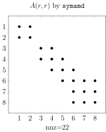
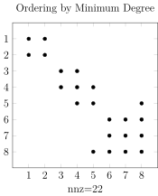
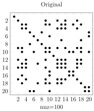
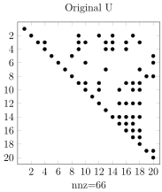
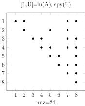
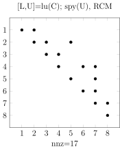

8.5. Reordering and Matrix Bandwidth#
During the process of matrix factorization into a product by methods such as Gaussian elimination and Cholesky factorization, there will always be a problem with fill-in that is generating additional nonzero elements during the elimination process (i.e. row operation). Hence we are unable to take advantage of the sparsity feature of the original matrix and end up wasting both storage and computational time. Therefore the problem is how to perform row operations whilst minimizing the fill-in of nonzero elements. One way to achieve this is to try to position the nonzero elements near the main or principal diagonal, so that reordering of rows and columns will not result in additional nonzero elements. The process of moving the nonzero element near the principal diagonal is the same as reducing the profile or the bandwidth of the matrix.
Consider an \(n \times n\) matrix \(A=(a_{ij})\). If all matrix elements are zero outside a diagonally confined band whose range is determined by constants \(p\) and \(q\);
\(a_{ij}=0\) \(\text{if}\) \(j<i-p\) \(\text{or}\) \(j>i+q\); \(p,q \geq 0\)
(or \(j-i>p\), or \(i-j>q\); \(p, q \geq 0\) ),
where \(p\) and \(q\) are the distances above and below the main diagonal, then the bandwidth \(bw\) is given by \(bw=p+q+1\) (in other words, it is the smallest number of adjacent diagonals to which the non-zero elements are confined).
A matrix is called a band matrix or banded matrix if its bandwidth is reasonably small.
A band matrix with \(p=q=0\) is a diagonal matrix;
A band matrix with \(p=q=1\) is a tridiagonal matrix;
The indices of the nonzero elements for matrix \(B\) are given in the following table, using the conventional numbering used in MATLAB.
\(i\) |
\(j\) |
\([i, j]\) |
|---|---|---|
1 |
1 |
[1, 1] |
2 |
1 |
[2, 1] |
1 |
2 |
[1, 2] |
2 |
2 |
[2, 2] |
3 |
2 |
[3, 2] |
2 |
3 |
[2, 3] |
3 |
3 |
[3, 3] |
4 |
3 |
[4, 3] |
3 |
4 |
[3, 4] |
4 |
4 |
[4, 4] |
Therefore, the difference between i and j for each nonzero entry is either 0 or 1; hence the maximum distance is 1, i.e. in MATLAB the bandwidth calculation for a tridiagonal matrix \(T\) is performed by the following commands:-
% Calculate bandwidth of a given matrix
>> T =[
1 1 0 0
1 1 1 0
0 1 1 1
0 0 1 1]
>> [i,j]=find(T);
>> bw=max(i-j)
bw =
1
Note:
[i,j]=find(T); %returns the row and column indices for
% the nonzero entries
bw=max(i-j) %returns an array the same size as i
%and j with the largest elements taken
%from i or j.
%the dimensions of i and j must match.
Note
Note - in some textbooks and articles the bandwidth is given as \(bw=p+q+1\) - the bandwidth of a tridiagonal matrix is given as 3 (i.e. \(1(L) + 1(U) + 1(D)\)). Also, when \(p=q=2\) one has a pentadiagonal matrix and so on. Also, an upper triangular matrix is obtained when \(q=0\), \(q=n-1\), and similarly, with \(p=n-1\), \(q=0\), a lower triangular matrix is obtained.
8.5.1. Cuthill and McKee Reordering#
The most simple and popular method of minimizing the bandwidth was developed by Cuthill and McKee (1969). Later the method was improved by Alan George who developed the Reverse Cuthill and McKee (RCM) method which is much more effective than the original CM algorithm. There are several other efficient bandwidth reduction methods used in re-ordering of sparse matrices, namely Minimum Degree Reordering method. The Cuthill and McKee algorithm is outlined in the following steps:-
For a given sparse symmetric matrix, plot the adjacency graph (alternatively if you have been given the adjacency graph, then it is useful to write down the corresponding adjacency matrix).
Look at all the nodes, and produce a table listing the node numbers and the number of connections (or degree).
Select the node with the lowest degree (say \(n_1\)) and write it down under a column heading ‘Result/Head’. If there is more than one node with the same number of degree, then choose one of them and write it down.
Look at the nodes connected directly to node \(n_1\), write down in the next column ‘Queue’ the nodes that are connected to \(n_1\), in the order with lowest degree (e.g. \(n_2\), \(n_3\), \(n_4\)) that has not appeared in the Result column before.
Extract the first node in the queue - say \(n_2\), if \(n_2\) has not been previously inserted in ‘Result’ then write \(n_2\) below \(n_1\) and check again for the connections. Since \(n_4\) is already in the queue, you need to see if \(n_2\) is connected to any other nodes, say \(n_5\) write down in the queue column \(n_4\) if \(n_2\) was not connected to a new node, just leave a blank in the queue column.
Now, write down \(n_3\) below \(n_2\) in the Results column, and repeat step 4.
Repeat steps 4 to 6 until there are no more nodes left to be considered.
Look at your list in the column Result - and renumber these as new node numbers.
Continue until the size of the array Result is \(n\) for an \(n\times n\) matrix (i.e. all nodes are included in the array).
Note
Note:- If the selected node in column Results is not connected to any other node, then we put a ‘-‘ in the corresponding position in the queue column.
Example 8.7
Consider the following sparse matrix and its corresponding adjacency plot:
Matrix
Graph

Original nodes |
No. of connections |
Results Head |
Queue |
RCM |
New nodes |
|---|---|---|---|---|---|
1 |
1 |
1 |
5 |
7 |
1 |
2 |
3 |
5 |
3 |
4 |
2 |
3 |
2 |
3 |
2 |
8 |
3 |
4 |
1 |
2 |
6,8 |
6 |
4 |
5 |
2 |
6 |
- |
2 |
5 |
6 |
2 |
8 |
- |
3 |
6 |
7 |
1 |
4 |
7 |
5 |
7 |
8 |
2 |
7 |
- |
1 |
8 |
Note that the labels of new nodes are the reverse of the elements in the array Results. See below the re-ordered matrix and the adjacency graph (note the diagram remains unchanged, but nodes are now relabelled).
It can be seen that the algorithm keeps all nonzero elements close to the diagonal. You can see visibly that there are more zero elements below and above the main diagonal and nonzero elements are close to the main diagonal and the re-ordered matrix exhibits a banded structure.
Using MATLAB the bandwidths of the original matrix A and the reordered matrix B can be found as:-
>> [i,j]=find(A); %returns the row and col indices
%of the nonzero entries
>> bw=max(i-j)
bw =6
>> [i,j]=find(B);
>> bw=max(i-j)
bw =2
i.e. The (half) bandwidth of the matrix has been reduced to 2 instead of 6; hence, the full bandwidth of the matrices A and B are 13 and 5 respectively.
Note that the relabeling described above used the reverse of the array RCM of the reordered nodes, hence this is the Reverse Cuthill-McKee (RCM) re-ordering technique. In the original Cuthill-McKee (CM) algorithm, the elements of array Results are relabelled without reversing the elements. i.e.
Original nodes |
1 |
2 |
3 |
4 |
5 |
6 |
7 |
8 |
|---|---|---|---|---|---|---|---|---|
Cuthill-McKee |
1 |
5 |
3 |
2 |
6 |
8 |
4 |
7 |
Reverse CM |
7 |
4 |
8 |
6 |
2 |
3 |
5 |
1 |
In MATLAB, the command symrcm(A) returns the symmetric reverse
Cuthill-McKee ordering of A. This is a permutation matrix p such that
\(A(p,p)\) tends to have its nonzero elements closer to the main diagonal.
Example MATLAB code:
p = symrcm(A);
spy(A(p,p)), title('A(p,p) after Cuthill-McKee ordering')
nz = nnz(A);
pct = 100/numel(A);
xlabel(sprintf('nonzeros=%d (%.1f%%)',nz,nz*pct));
Figure 5 below shows the nonzero pattern of the original matrix A, the
ordered matrix B, matrix C, ordered by the CM method, and matrix D is
found by using the MATLAB function symrcm
Note that the half bandwidth of the reordered matrix \(C\), using the
original Cuthill-Mckee method is \(bw =5\), and the half bandwidth of the
reordered matrix \(D\) is \(bw =2\), using the MATLAB function sysmrcm for
the reverse Cuthill-Mckee is \(bw =2\), i.e. the same as that for matrix
\(B\). Hence, the Reverse Cuthill-Mckee algorithm for bandwidth reduction
of sparse matrices seems to be the most effective reordering method.
8.5.2. Column Count Reordering#
The idea of the column count reordering algorithm is to move rows and columns with higher nonzero count towards the end of the matrix. This algorithm reduces the time and storage for computing matrix operations such as the LU factorization and the Cholesky factorization, but its performance is not consistent overall and depends on the original matrix.
Example 8.8
Consider the sparse matrix and its corresponding adjacency graph from Example 8.7 :
The degrees of all vertices are obtained in the following:
vertex |
1 |
2 |
3 |
4 |
5 |
6 |
7 |
8 |
|---|---|---|---|---|---|---|---|---|
no. of degree |
1 |
3 |
2 |
1 |
2 |
2 |
1 |
2 |
Since vertex 7 has the least degrees, it is labelled as 1 - (Note: since vertices 1, 4, and 7 have the same number of degrees, therefore the new labels are interchangeable, as any of these vertices can be chosen in any order) and then vertices 4 and 1 are labelled (again since vertices 4 and 1 have the same number of degrees, therefore the new labels are interchangeable). The algorithm is then continued in the same steps until complete labelling is obtained as shown:
new vertex |
1 |
2 |
3 |
4 |
5 |
6 |
7 |
8 |
|---|---|---|---|---|---|---|---|---|
old vertex |
7 |
4 |
1 |
8 |
6 |
5 |
3 |
2 |
The resulting adjacency matrix and graph are shown below:
Similar to the command symrcm for RCM reordering, in MATLAB the
command colperm returns the column count reordering of \(A\). This
is a permutation matrix \(q\) such that \(A(q,q)\) tends to move rows and
columns with higher nonzero count towards the end of the matrix (a
down-arrow effect).
Example MATLAB code:
q = colperm(A);
spy(A(q,q)),title('A(q,q)-Column Count ordering by colperm')
nz = nnz(A);
pct = 100 / numel(A);
xlabel(sprintf('nonzeros=%d (%.1f%%)',nz,nz*pct));
8.5.3. Minimum Degree Reordering#
The minimum degree algorithm attempts to reduce the fill-in caused by elimination such as Gaussian elimination, LU decomposition or the Cholesky decomposition. The computational costs of this algorithm is inexpensive, and it is easy to apply and effective for most problems which are not too large. However, most mathematical software packages such as MATLAB use an approximation minimum degree, rather than the exact degree to minimise the computational costs. The minimum degree algorithm is re-labelling of the vertices in ascending degree order. Nodes with lower degrees are labelled early to reduce adding many fill-ins.
Example 8.9
Consider the sparse matrix and its corresponding adjacency graph from Example 8.7:
The minimum degree algorithm is re-labelling of the vertices in ascending degree order. Nodes with lower degrees are labelled early to reduce adding many fill-ins.
The degrees of all vertices are shown in the following table:
vertex |
1 |
2 |
3 |
4 |
5 |
6 |
7 |
8 |
|---|---|---|---|---|---|---|---|---|
no. of degree |
1 |
3 |
2 |
1 |
2 |
2 |
1 |
2 |
where vertex 7 has the least degrees, then vertex 7 is numbered with first as 1. Since vertex 7 is connected to vertex 4, then vertex 4 must be updated by subtracting 1 (if it is already 1 then just write it down as 1 and number it immediately after 7) as shown in the following Table - where the eliminated node is represented by X , and the vertex is numbered with a new label. Note: if no tie-breaking strategy has been established, all three vertices 1, 4, and 7 can be selected in this case, and proceed to elimination. The completed ordering using the Minimum Degree algorithm is shown in the following table, together with the resulting adjacency matrix and graph:
{kind=link}
Similar to the commands symrcm and colperm, in MATLAB
the command symamd returns the approximate Minimum Degree
reordering of \(A\) to produce large blocks of zeros in the matrix. The
permutation matrix \(r\) is calculated such that \(A(r,r)\) tends to move rows
and columns with higher nonzero elements towards the end of the matrix -
similar to the Column Count algorithm.
Example MATLAB code:
r = symamd(A);
spy(A(r,r)),title('A(r,r)-Minimum Degree ordering by symamd')
nz = nnz(A);
pct = 100 / numel(A);
xlabel(sprintf('nonzeros=%d (%.1f%%)',nz,nz*pct));


8.5.4. Comparison between various ordering schemes and fill-in effect#
For a more effective comparison we consider a symmetric \(20 \times 20\) sparse matrix A, which was generated by using MATLAB’s rand command:
>> S = sparse(+(rand(20,20) < 1/3)); % should allow <10% nonzeros
>> B=full(S);
>> A=B'*B % makes A a symmetric matrix
Using the MATLAB *spy command the corresponding sparsity patterns from the results of the reordering by the RCM, CC and MD methods are summarised in Figure 6. Furthermore, using the MATLAB command \([L,U] = lu(A)\) the upper triangular matrix in \(U\) for the full matrix A and the reordered matrices are also shown in Figure 6. [ Note: for the original matrix \(bw =18\) and for the RCM reordered matrix \(bw =7\) were found using MATLAB]


Figure 6. Comparison between reordering schemes for a \(20 \times 20\) symmetric matrix
In summary, the re-ordering or permutation of matrices provides a pre-conditioning for the solution of matrices and the resulting matrix is already nearly in LU factorization or banded form depending on the chosen ordering method. Applying methods for the solution of full matrices will produce more nonzero elements (fill-in effect) and no computational advantage from the sparsity of matrix can be achieved.
For the \(20 \times 20\) matrix \(A\) the number of fill-in required to form the upper triangular using LU factorization of the permuted matrix is shown in the following table:
\(20 \times 20\) |
Original Matrix |
Reverse CM |
Column Count |
Min Degree |
|---|---|---|---|---|
No. of nnz in \(\mathbf{U}\) |
\(66\) |
\(54\) |
\(53\) |
\(58\) |
For large matrices with a high percentage of zero elements, reordering process of matrices significantly reduces the number of fill-in and the CPU processing time , as well as the amount of memory required for data storage when solving large sparse linear system of equations.
For a \(3000\times 3000\) matrix as an example the effect of reordering on the LU factors are presented in the following table:
\(3000 \times 3000\) |
nnz (percentage) |
CPU (sec) |
|---|---|---|
Original Matrix |
\(1783708\) \((100)\%\) |
\(5.500\) |
Reverse CM |
\(862448\) \((48)\%\) |
\(1.438\) |
Column Count |
\(521582\) \((29)\%\) |
\(1.016\) |
Minimum Degree |
\(692034\) \((39)\%\) |
\(1.047\) |
Example 8.10
Consider the following sparse matrix and its corresponding adjacency graph.
For the RCM and Column Count reordering methods, use the MATLAB commands
symrcm(A) and colperm(A) to find the corresponding reordered
matrices \(C\) and \(D\). Plot the pattern of matrices \(A\), \(C\) and \(D\).
Apply the MATLAB command [L,U]=lu(A) for finding the LU factorisation
of matrices \(A\), and similarly \(C\) and \(D\). Plot the pattern of the
resulting matrices using spy(lu(A)), spy(lu(C)) and spy(lu(D)).
Comment on the number of non-zero elements following LU factorisation.
Plot the upper triangular matrix U for each of the factorised matrices
and record the number of non-zero (nz) elements in U for each of the
resulting upper triangular matrices in a table. Comment on the
advantages of the LU factorisation and the effect of fill-in when using
ordered matrices. The three stages of the required solution together
with the MATLAB commands are summerised in Figure 7.


Figure 7. Comparison of the LU factorisation and fill-in effect on original and ordered matrices.
Following LU factorisation, we find the number of non-zero elements in various reordering methods in \(U\) as:
\(8 \times 8\) |
Original Matrix |
Reverse CM |
Column Count |
|---|---|---|---|
No. of nnz in \(\mathbf{U}\) |
\(24\) |
\(17\) |
\(18\) |
Hence, using the re-ordering methods, both RCM and Column Count, significantly reduces the generation of fill-in elements compared to the LU factorisation of the original matrix \(A\), even for an \(8\times8\) matrix.
Furthermore, the solution to the original linear algebraic system contributes significantly to the total computational time for the solution of stiff problems, as well as affecting the accuracy of the solution (and hence, affecting the computational time). Note that re-ordering enhances the computational accuracy through a reduction in rounding errors (due to fewer computational steps, resulting from reduced fill-in elements). In terms of application in the solutions of large systems of stiff differential equations (which require treatment of the associated Jacobinan metrix), the re-ordering of the system of equations resulting from the Newton iteration will lead to the solution of a banded matrix instead of a full matrix treatment, and hence resulting in fewer fill-ins, more accurate solutions and shorter computing time.
References
MATLAB Help/documentation on Sparse Matrices, e.g.:
http://www.mathworks.co.uk/help/matlab/math/accessing-sparse-matrices.html
http://www.mathworks.co.uk/help/matlab/examples/sparse-matrices.html
Saad, Y., 2003. Iterative Methods for Sparse Linear System 2nd ed. Philadelphia: SIAM- Society for Industrial and Applied Mathematics
Golub, G. and Van Loan, C., 1996g. Matrix Computations 3rd edition. London: The Johns Hopkins University Press